Transfer Output Shaft, Disassemble & Service
Component Location IndexTransfer Output Shaft:
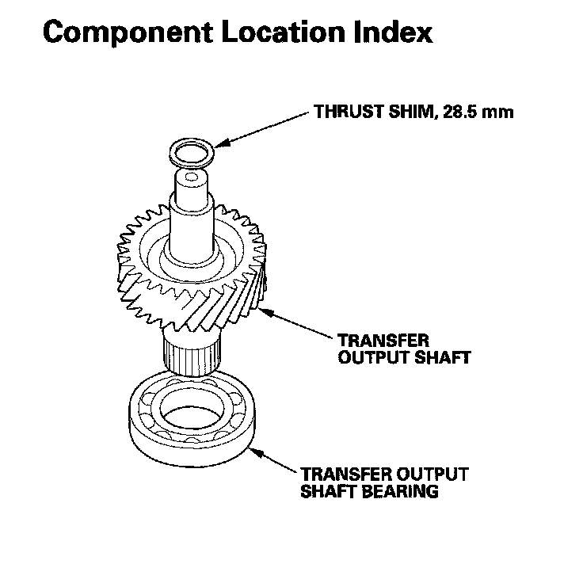
Transfer Output Shaft Bearing Replacement
Special Tools Required
Driver, 40 mm I.D. 07746-0030100
1. Remove the transfer output shaft bearing (A) with a commercially available puller (B) bearing separator (C) and shaft protector (D). Place a shaft protector between the transfer output shaft and the puller to prevent damaging the shaft.
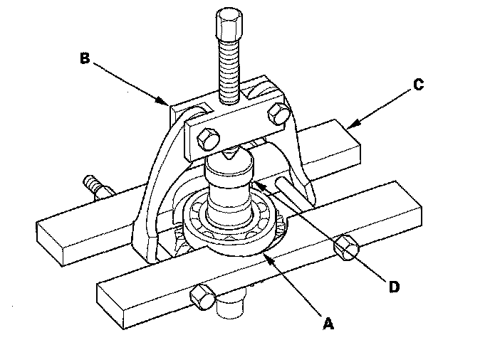
2. Install the new bearing on the transfer output shaft with the using the driver (40 mm I.D.) and the press.
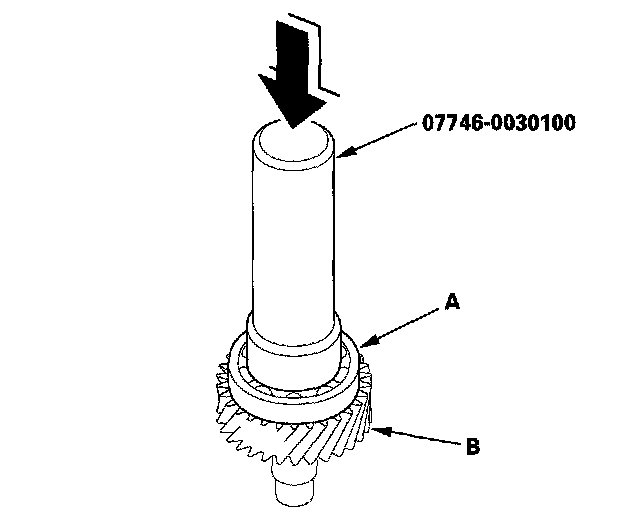
Oil Seal Replacement
Special Tools Required
^ Driver 07749-0010000
^ Attachment, 65 mm 07JAD-SH30100
1. Remove the oil seal from the torque converter housing.
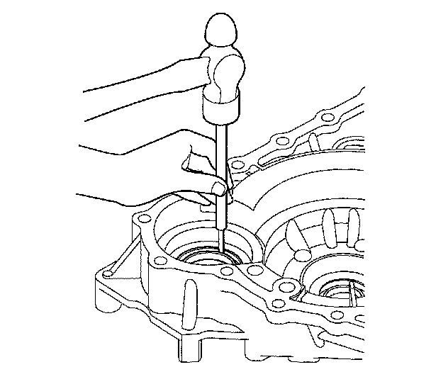
2. Install the new oil seal flush to the torque converter housing using the driver and the attachment (65 mm).
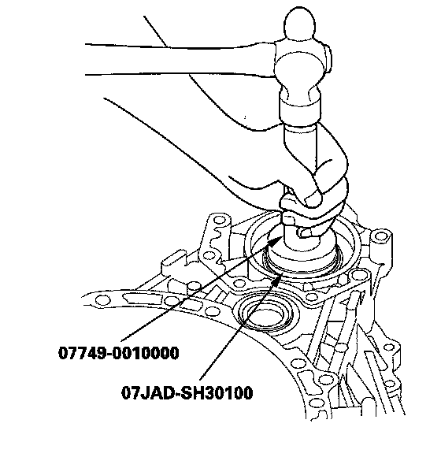
Transmission Housing Bearing Replacement
Special Tools Required
^ Driver 07749-0010000
^ Attachment, 72 x 75 mm 07746-0010600
1. Remove the transfer output shaft bearing (A) from the transmission housing (B) by heating the housing to about 212°F (100°C) with a heat gun (C). Do not heat the housing more than 212°F (100°C).
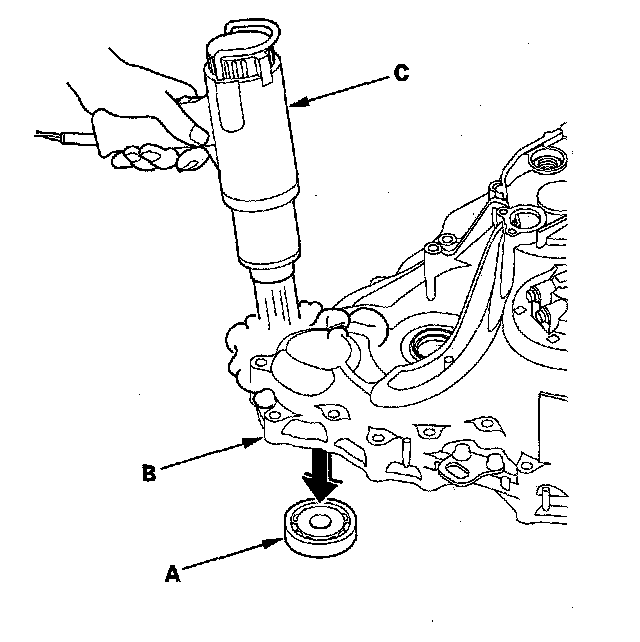
2. Install the new bearing in the housing in the direction shown.
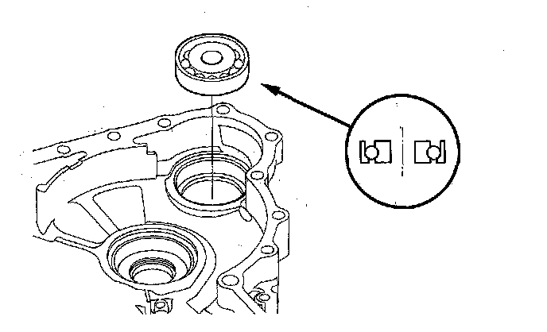
3. Drive the new bearing until it bottoms in the housing using the driver and the attachment (72 x 75 mm).
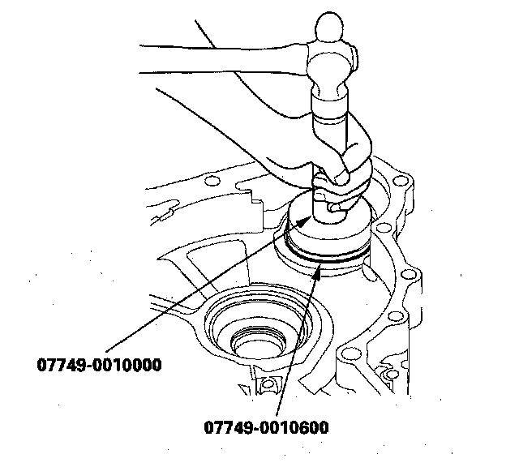
Transfer Output Shaft Installation Height Inspection/Adjustment
NOTE: If the transfer output shaft, transfer output shaft bearing, transfer output shaft transmission housing bearing, transmission housing, or torque converter housing were replaced, adjust the transfer output shaft installation height with the 28.5 mm thrust shim.
1. Install the transfer output shaft (A) in the torque converter housing, and install the 28.5 mm thrust shim (B) on the top of the shaft. If you replace the 28.5 mm thrust shim with a new one, use the same thickness shim as the old one.
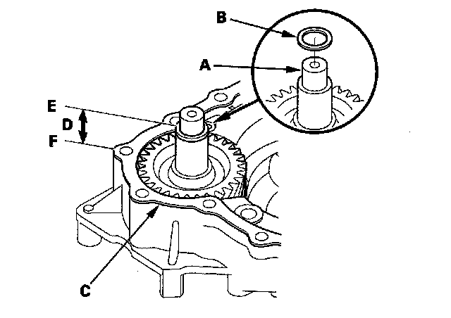
2. Install the new gasket (C) on the torque converter housing.
3. Measure the height (D) of the transfer output shaft installation between the surface (E) of the gasket and the top (F) of the 28.5 mm thrust shim in at least three places. Use the average as the actual height.
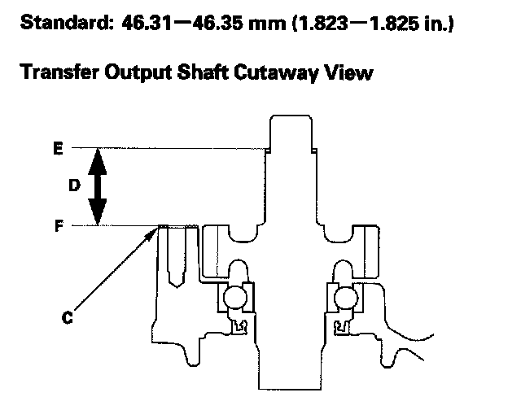
4. If the measurement is out of standard, remove the 28.5 mm thrust shim and measure its thickness.
5. Select and install a new thrust shim, then recheck the installation height.
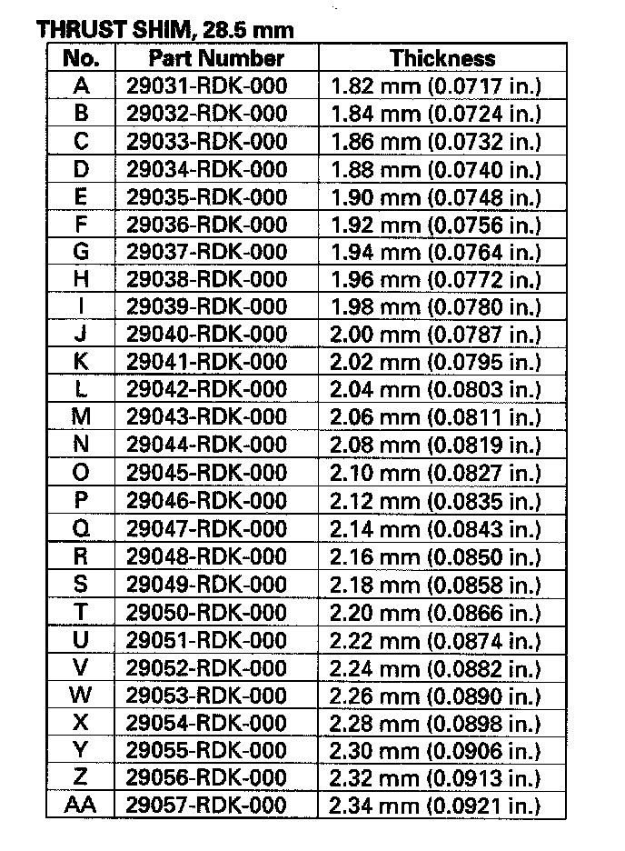